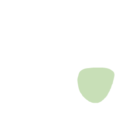
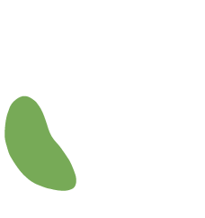
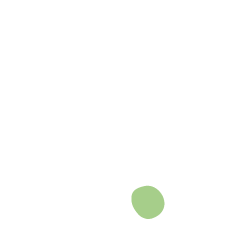
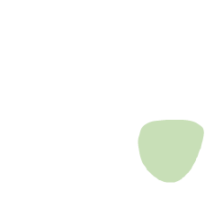
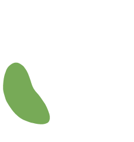
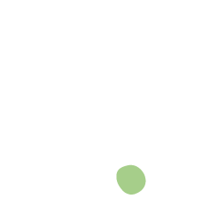

colectivo
Prácticas Narrativas
ten un buen
Colaboramos con comunidades en diferentes regiones de México donde nos han invitado a contribuir a generar espacios donde se pueda reconocer los conocimientos y herramientas que tienen para conservar su entorno, defender su territorio, generar autonomía y responder problemas que afectan a la comunidad así como al abuso y la violencia.
De forma individual, parejas o con familias. Enfocándonos en las historias de las vidas de las personas y encontrando maneras en que puedan cambiar la relación con el problema o dificultad que están enfrentando. Tenemos un compromiso fuerte por asegurarnos de que nuestros servicios terapéuticos puedan responder a los contextos diversos de las vidas de las personas.
En colectivo tenemos un compromiso por apoyar a otr@s en el trabajo que realizan. Colaboramos con otras organizaciones y terapeutas para poder reflexionar sobre el trabajo que hacen y, de forma colaborativa, encontrar formas de desarrollarlo de acuerdo a lo que es importante para ell@s
En donde compartimos y exploramos las ideas de la práctica narrativa, postestructuralismo, feminismos, antropóloga crítica y movimientos sociales y formas en las que estás se pueden transformar en herramientas prácticas para el trabajo con personas de manera individual o colectiva.